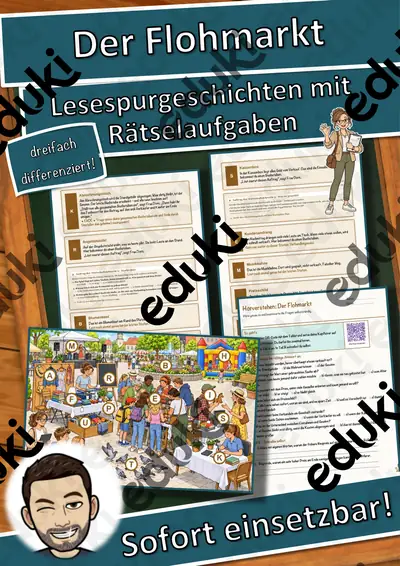
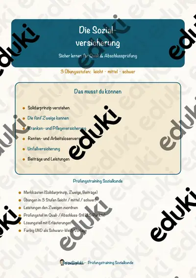
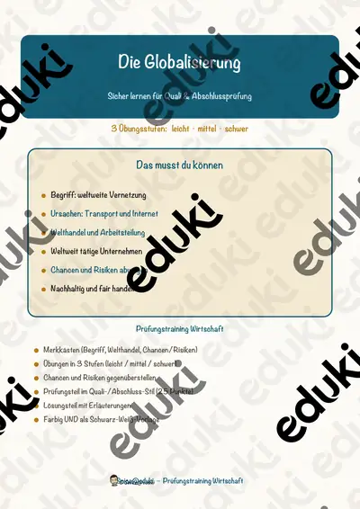
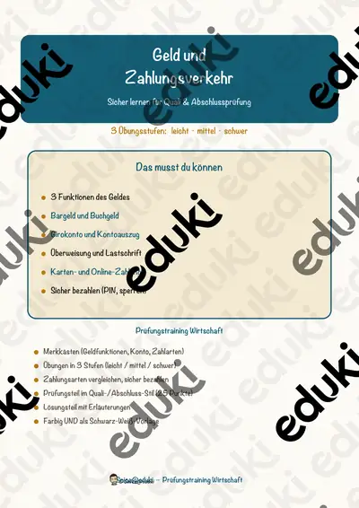
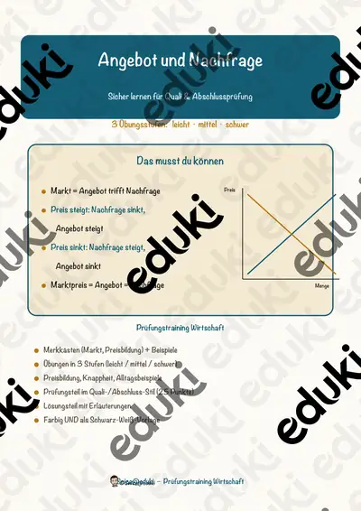
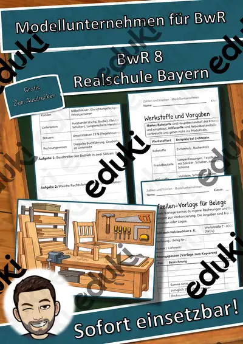
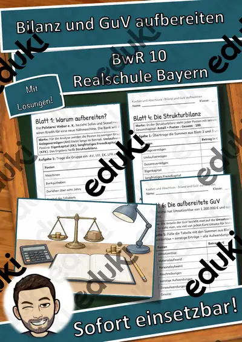
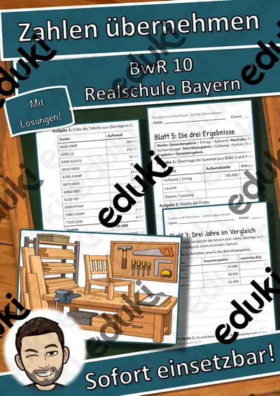

Lesespur: Die erste Steuererklärung: Lohnsteuer, Werbungskosten und Erstattung – Lesespurgeschichte mit Rätseln (Klasse 10)

Lesespur: Die Schuldenfalle: Ratenkauf, Handyvertrag und Zahlpause – Lesespurgeschichte mit Rätseln (Klasse 9)

Lesespur: Der Mietvertrag: die erste eigene Wohnung – Lesespurgeschichte mit Rätseln (Klasse 9)

Lesespur: Markt und Preis: Angebot und Nachfrage am Christbaummarkt – Lesespurgeschichte mit Rätseln (Klasse 9)

Lesespur: Der Weihnachtsbasar: planen, kalkulieren, verkaufen – Lesespurgeschichte mit Rätseln (Klasse 6)

Lesespur: Taschengeld: mein Geld klug einteilen – Lesespurgeschichte mit Rätseln (Klasse 3)

Lesespur: Der Flohmarkt – Lesespurgeschichte mit Rätseln (Klasse 7)

Lesespur: Der Zukunftstag – Lesespurgeschichte mit Rätseln (Klasse 8)

Lesespur: Die Bank – Lesespurgeschichte mit Rätseln (Klasse 8)

Die soziale Marktwirtschaft – Prüfungstraining Wirtschaft (Klasse 9)

Die Inflation – Prüfungstraining Wirtschaft (Klasse 9)

Der Kaufvertrag – Prüfungstraining Wirtschaft (Klasse 9)

Prüfungstraining Sozialkunde: Die Sozialversicherung (Klasse 9)

Die Globalisierung – Prüfungstraining Wirtschaft (Klasse 10)

Verbraucherrechte – Prüfungstraining Wirtschaft (Klasse 9)

Berufswahl und Ausbildung – Prüfungstraining Wirtschaft (Klasse 9)

Der Wirtschaftskreislauf – Prüfungstraining Wirtschaft (Klasse 9)

Geld und Zahlungsverkehr – Prüfungstraining Wirtschaft (Klasse 9)

Konsum und Werbung – Prüfungstraining Wirtschaft (Klasse 8)

Angebot und Nachfrage – Prüfungstraining Wirtschaft (Klasse 9)

Modellunternehmen für den BwR-Unterricht – Arbeitsheft mit Lösungen (BwR 8, Realschule Bayern)

Periodenrichtig abgrenzen – Arbeitsheft mit Lösungen (BwR 10, Realschule Bayern)

Zusatzauftrag – Arbeitsheft mit Lösungen (BwR 10, Realschule Bayern)

Teilkostenrechnung: Einstieg – Arbeitsheft mit Lösungen (BwR 10, Realschule Bayern)

Zwei Produkte im Vergleich – Arbeitsheft mit Lösungen (BwR 10, Realschule Bayern)

Rückstellungen auflösen – Arbeitsheft mit Lösungen (BwR 10, Realschule Bayern)

Der Jahresabschluss – Arbeitsheft mit Lösungen (BwR 10, Realschule Bayern)

Bilanz und GuV aufbereiten – Arbeitsheft mit Lösungen (BwR 10, Realschule Bayern)

Zahlen übernehmen – Arbeitsheft mit Lösungen (BwR 10, Realschule Bayern)

Zinsen im Kredit – Arbeitsheft mit Lösungen (BwR 9, Realschule Bayern)
Keine Materialien gefunden – versuch einen anderen Suchbegriff oder Filter.
Wirtschaft im Alltag der Jugendlichen
Wirtschaftsunterricht gelingt, wenn die Beispiele aus dem Leben der Klasse stammen: Taschengeld, Handyvertrag, Ausbildungsplatz. Die Lesespuren dieser Seite setzen genau dort an, erklären Begriffe in Geschichten und lassen die Klasse Entscheidungen begründen.
Klasse 3 bis 7: Erste Erfahrungen
Der Einstieg erfolgt über „Taschengeld“ in der Grundschule und „Der Weihnachtsbasar“ in Klasse 6. In Klasse 7 gibt es „Der Flohmarkt“ als Beispiel für Angebot und Nachfrage, dazu „Ausbildungsvertrag Basics“, „Verhalten im Betrieb“ und „Arbeitsschutz & Jugendarbeitsschutzgesetz“.
Klasse 8 und 9: Geld, Markt, Schulden
Mit „Die Bank“, „Konsum und Werbung“ und „Der Zukunftstag“ beginnt Klasse 8. In Klasse 9 liegt der Schwerpunkt: „Die Schuldenfalle“, „Der Mietvertrag“, „Markt und Preis“, „Die soziale Marktwirtschaft“ und „Die Inflation“. Hier bringen die Lesespuren Begriffe mit praktischen Entscheidungen zusammen.
Klasse 10: Steuer und Globalisierung
Zum Abschluss stehen „Die erste Steuererklärung“ und „Die Globalisierung“ bereit. Prüfungstrainings fassen die wichtigsten Begriffe vor Klassenarbeiten und Abschlussprüfungen zusammen.
Für Lehrkräfte mit wenig Wirtschaftsstunden
Das Fach ist an vielen Schulen unterbesetzt. Die Materialien sind deshalb so aufgebaut, dass sie auch fachfremd unterrichtet werden können: Alle Fachbegriffe stehen im Text, die Lösungen sind vollständig.
Aufgaben aus der Lebenswelt
Die Aufgaben gehen von Fragen aus, die Jugendliche tatsächlich stellen: Was darf mein Ausbildungsbetrieb verlangen? Wie entsteht ein Preis? Warum sind Schulden gefährlich? Auf diese Weise bleibt der Unterricht nah an der Lebenswelt, ohne den Stoff zu verwässern.
Verbindung zu anderen Fächern
Wirtschaftsthemen berühren Mathematik, Deutsch und Politik. Prozentrechnung beim Preisvergleich, Vertragstexte lesen, Verbraucherrechte kennen: Mit den Lesespuren lassen sich solche Brücken schlagen, ohne eine eigene Unterrichtsreihe neu zu planen.
Praktisch ist außerdem, dass sich einzelne Lesespuren zu einer Wochenarbeit bündeln lassen, bei der die Klasse Station für Station ein Thema wie Haushaltsplanung oder Ausbildungsvertrag durchdringt und am Ende gemeinsam auswertet.
Häufige Fragen
Gibt es Material zur Berufsorientierung?
Ja, etwa „Ausbildungsvertrag Basics“, „Verhalten im Betrieb“ und „Arbeitsschutz & Jugendarbeitsschutzgesetz“. Weiteres steht bei Arbeitslehre.
Sind die Materialien für die Berufsschule geeignet?
Einige wenige ja. Der überwiegende Teil richtet sich an die Sekundarstufe I.
Wie aktuell sind Steuer- und Mietthemen?
Sie erklären Grundprinzipien. Konkrete Beträge und Fristen solltest du aktuell prüfen.
Gibt es Prüfungstrainings?
Ja, vor allem für Klasse 9 und 10.